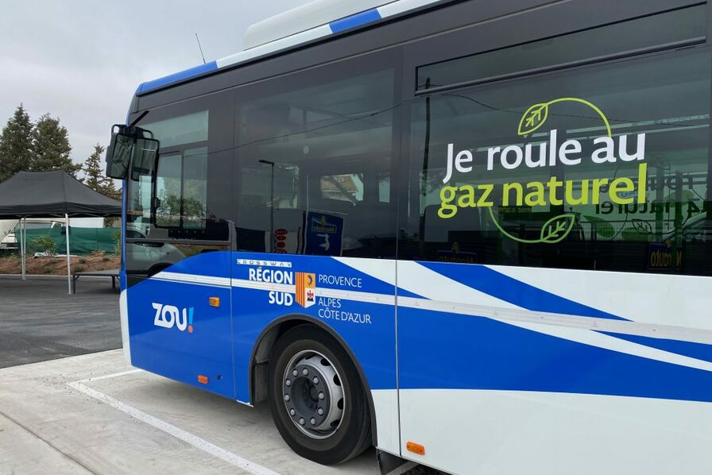
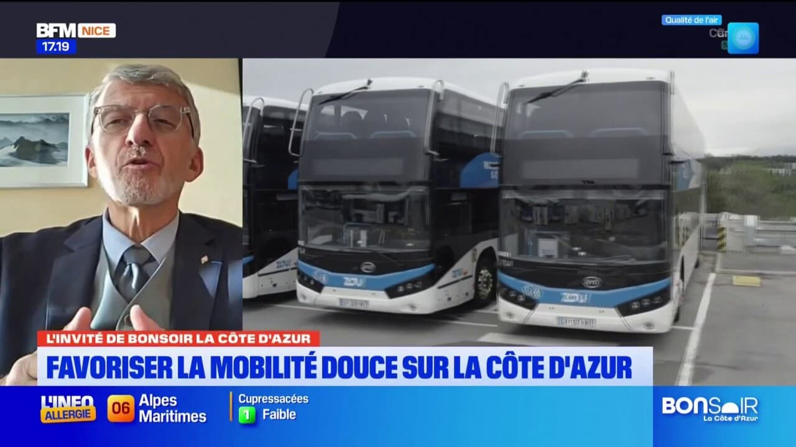

Présentation globale
- Nom : ZOU! (Réseau de transport régional Provence-Alpes-Côte d’Azur)
- Statut : Service public régional
- Création : 2018 (fusion des réseaux LER, Cartreize, Varlib, etc.)
- Propriétaire : Région Provence-Alpes-Côte d’Azur
- Type de transport : Cars interurbains, transport scolaire, lignes express
- Nombre de lignes : + 200 lignes
- Nombre de véhicules : environ 2 000 autocars
- Exploitants : Keolis, Transdev, RLA, autres opérateurs privés
- Zone couverte : Toute la région PACA + liaisons avec Monaco et Italie
Historique rapide
Le réseau ZOU! a été créé en 2018 pour unifier tous les anciens réseaux interurbains de PACA. L’objectif : offrir un service plus lisible, moderne et cohérent. Le réseau dessert les grandes villes (Nice, Cannes, Marseille, Toulon) mais aussi les zones rurales.
Particularités
- Réseau public géré directement par la Région
- Service essentiel pour les zones rurales isolées
- Flotte en transition vers le non polluant (GNV, électrique, hybride)
- Politique tarifaire sociale pour les jeunes et les scolaires
Importance économique dans la région
ZOU! est un acteur économique majeur dans toute la région PACA :
- Plus de 40 millions de trajets par an
- Transport scolaire de milliers d’élèves chaque jour
- Accès aux pôles économiques (Sophia-Antipolis, Marseille, Toulon…)
- Réduction du trafic automobile sur les autoroutes saturées (A8, A7)
Contribution économique directe
- Budget annuel d'exploitation : environ 400 M€
- Investissements lourds : 50 à 80 M€ / an dans les véhicules et infrastructures
- Plus de 3 000 emplois directs et indirects (conducteurs, garages, exploitants)
Contribution indirecte
- Désenclavement des zones rurales
- Réduction du coût social de la pollution
- Soutien au tourisme (liaisons littoral & montagne)
- Accès facilité pour les travailleurs aux grandes zones économiques
Tarification actuelle
- Ticket interurbain : à partir de 2,10 €
- ZOU! Études : 90 € / an (trajets illimités scolaires et étudiants)
- Abonnement mensuel régional : 125 € (train + bus)
- Réductions : jusqu’à -90% pour les -26 ans
- ZOU! Solidaire : tarifs réduits pour les personnes en difficulté
Structure économique
Revenus
- Vente de titres : 70 à 100 M€ / an
- Subventions Région Sud : 250 à 300 M€ / an
- Subventions État / Europe : 20 à 40 M€ / an
Total : environ 400 M€ de budget annuel
Dépenses
| Poste | Montant estimé | % du total |
|---|---|---|
| Salaires & exploitation | 200 M€ | 50% |
| Maintenance & dépôts | 50 M€ | 12% |
| Transport scolaire | 100 M€ | 25% |
| Achat de véhicules propres | 50 à 80 M€ | 13% |
Taux d'utilisation de transports non polluants

Flotte propre
- Environ 35% de la flotte roule au GNV, électrique ou hybride
- Objectif : 100% véhicules propres d’ici 2030-2035
- Cars GNV = -30% de CO₂ par rapport au diesel
Taux global de trajets non polluants : ~30% actuellement.

Impact économique du non-polluant
- Moins de carburant consommé (GNV moins cher que diesel)
- Réduction du bruit → amélioration de la vie dans les villages
- Moins de maladies respiratoires → économies pour la région
- Long terme : véhicules propres = économies de maintenance
- Un car remplace 50 voitures → baisse trafic + pollution
Projections économiques
Si ZOU! passe à 100% propre :
- Baisse de 30 à 40% des émissions régionales liées au transport routier
- Économies annuelles estimées : 20 à 30 M€/an
- Réduction de 80 000 tonnes de CO₂ sur 10 ans
- Amélioration majeure de la qualité de vie dans les vallées alpines
Améliorations déjà mises en place
1) Conversion progressive au GNV
- Plusieurs dépôts équipés en gaz naturel
- Réduction immédiate des émissions
2) Introduction de cars électriques
- Testés sur les lignes urbaines courtes
- Silencieux et non polluants
3) Lignes express métropolitaines
- Nice ↔ Sophia-Antipolis
- Nice ↔ Grasse
- Nice ↔ Vence
- Réduit fortement l’usage de la voiture
4) Politique tarifaire très avantageuse
- ZOU! Études = l’un des abonnements les moins chers de France (90€/an)
- Réductions pour zones rurales
Améliorations non polluantes proposées
1) Conversion totale à l’électrique ou GNV
- Flotte cible : 2 000 bus → coût ≈ 300 M€
- Émissions divisées par 4
2) Déploiement de bornes de recharge dans tous les dépôts
- Coût : ~50 000 € par borne
- Total estimé : 2,5 M€
3) Nouvelles lignes express
- Lignes rapides vers les pôles économiques
- Coût d’exploitation d’une ligne express : 4 à 6 M€/an
4) Modernisation du matériel
- Wi-Fi gratuit, prises USB
- Coût : 3 000 € par bus → 1,5 M€ pour 500 bus